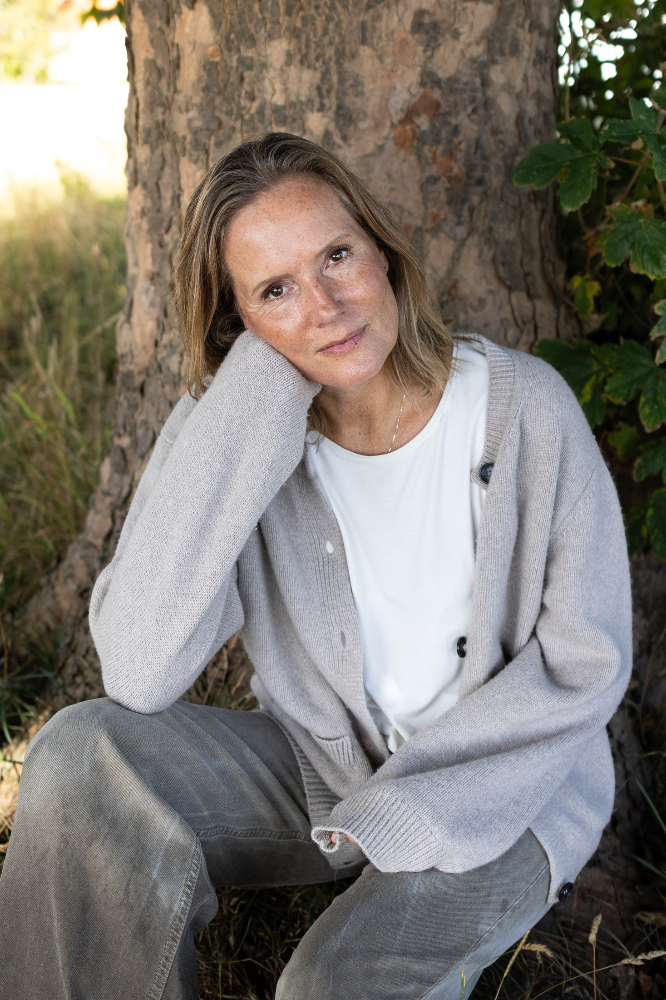
Kropsterapeut & Manuvision-behandler
Om mig
Jeg mødte Manuvision på et tidspunkt, hvor mit liv var ved at tage en drejning. Efter mange år i det, der på mange måder lignede drømmejobbet, måtte jeg erkende, at jeg ikke havde hjertet med i mit arbejde. En voksende interesse for kroppen, en nysgerrighed på samspillet mellem det fysiske og det mentale, fik mig i retning af Manuvision.
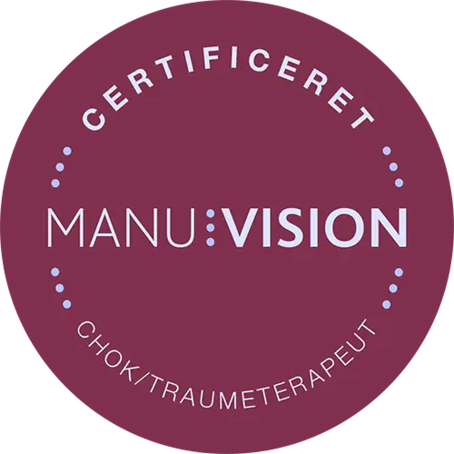
Jeg har behandlet klienter siden 2017, blev færdiguddannet i december 2018 og tog i 2022 overbygningen til Manuvision chok- og traumeterapeut.
- Eksamineret, certificeret og RAB-godkendt Manuvision kropsterapeut (2018)
- DAKOBE-registreret
- 300 timers anatomi, fysiologi og sygdomslære hos Innowell (2017)
- 120 timers efteruddannelse til chok- og traumeterapeut hos Manuvision (2022)
Se relevante kurser
- Kommunikation i praksis, Stig Sølvhøj
- Positiv psykologi, AT Work skolen
- Masterclass i hjernerystelse, Manuvision
- Masterclass i nakke og ryg, Manuvision
- Antroposofisk medicin og biologisk psykologi, Karsten Munk Akademiet
- Speciale i tilknytningsmønstre v. Anne Marie Clement, nervesystemsekspert og psykoterapeut
- Masterclass i autoritetstemaer, dominans og underkastelse v. Anne Marie Clement, nervesystemsekspert og psykoterapeut
Min historie
Jeg mødte Manuvision på et tidspunkt, hvor mit liv var ved at tage en drejning. Efter mange år i det, der på papiret lignede drømmejobbet, måtte jeg erkende, at jeg ikke havde hjertet med i mit arbejde. Jeg stod et sted, hvor jeg havde brug for at finde mening – både i mit arbejdsliv og i selve livet. Det var nødvendigt at skifte retning for ikke at miste mig selv. Jeg søgte en hverdag med mere plads til krop, sind og sjæl. Plads til hele mig.
En voksende interesse for kroppen, og en nysgerrighed på samspillet mellem det fysiske og det mentale, bragte mig hen mod Manuvision. En retning, hvor jeg lærte at lytte til kroppen, passe bedre på mig selv – og samtidig hjælpe og inspirere andre.
Læs mere
Jeg startede min kropsterapiuddannelse i januar 2017 og kom hurtigt i gang med at give elevbehandlinger. Stille og roligt byggede jeg et netværk og en erfaring op, og i sommeren 2018 blev jeg selvstændig. De klienter, jeg møder på min briks, er alle mulige slags mennesker – hver med deres egen historie. Siden har jeg taget flere masterclass-kurser inden for kropsterapien, og i sommeren 2022 færdiggjorde jeg overbygningen som chok- og traumeterapeut.
Den feedback, jeg oftest får fra klienter, er, at de kommer igen, fordi de oplever at blive mødt i en tillidsfuld, tryg og nærværende behandling – med ro, empati og indføling. (Læs evt. mere under klientudtalelser.)
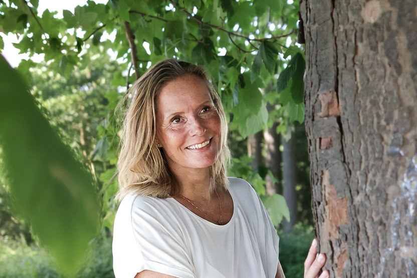
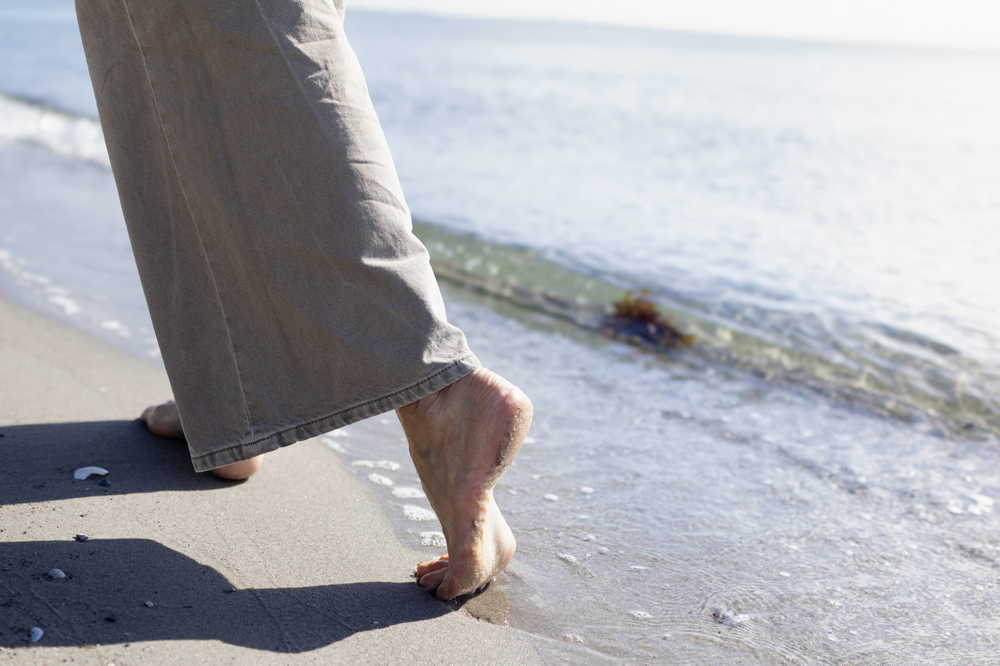
Jeg er certificeret og registreret hos:
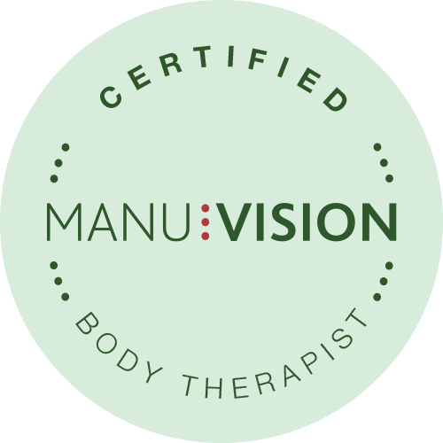
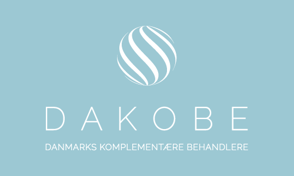
Hvem kan jeg hjælpe?
Jeg hjælper mennesker med alt fra smerter i fx nakke, skuldre, ryg og lænd til mere dybdegående problematikker som stress, angst, depression og PTSD. Mange af mine klienter har også et ønske om øget selvindsigt, bedre kontakt til krop og åndedræt – eller bare lyst til at forstå deres krop og nervesystem bedre og opnå større trivsel.
Som behandler hjælper jeg dig med at forstå din krops signaler og blive nysgerrig på årsager og sammenhænge. Når du mærker efter på briksen, lærer du samtidig dig selv bedre at kende. Det gør vi sammen – ved at skabe kontakt til, og bevidsthed om, dine grænser og dine behov. Et samarbejde, hvor du oplever forandring, indsigt og en bedre kontakt til dig selv.
Jeg glæder mig til at møde dig!
Kærlig hilsen Mette
Hvad andre siger
Rigtige oplevelser fra rigtige klienter, i deres egne ord.
jeg kom til Mette for at få mere balance i mit nervesystem efter en længere periode med stress. Allerede i den første samtale følte jeg mig rigtig godt tilpas i vores samtale og behandlingen. Mette er en utrolig dygtig, empatisk og nærværende behandler. Mette har en unik måde at møde dig på, hvor du er, hvordan du har det i kroppen og netop hvad du har brug for af behandling. Efter bare to behandlinger kunne jeg mærke en stor forskel, en ro og balance i kroppen som påvirkede mit sind og mine følelser positivt. Arbejdet med Mette har givet mig en indsigt i hvordan krop og sind hænger sammen, og at vi ikke kun kan tale os til at komme i balance. Mange af svarene ligger i kroppen og her kan jeg på det varmeste anbefale Mette og Manuvision teknikken.
— tidligere klient: Marie-Louise
Jeg er blevet henvist til dig fra min sundhedsforsikring ….. Mit forløb ved Mette har været uovertruffet og givende på det jeg kom med… Mette ser det hele menneske og går ind i de ting der røre sig i det øjeblik, der opstår inden og under behandlingen . Mette er lyttende og givende og er helt tilstede under hele den tid du er i hendes hænder. Tak for at gå hos dig - De bedste anbefalinger og TAK — Gitte, Optometrist & Foredragsholder
Mette har hjulpet mig igennem en stresssygemelding, og jeg er ikke i tvivl om, at det primært er mit forløb hos hende, som har gjort, at jeg nu er kommet igennem det på så god en måde, som jeg er. Mettes rolige og nærværende facon gav mig mulighed for at åbne for de svære følelser, som havde sat sig i mig, og hun hjalp mig med at få dem sat fri, så jeg kunne komme videre. Jeg vil varmt anbefale Mette til andre. — Maja, 31 år
Mit forløb hos Mette har været på i alt 10 gange henover ca. 3 måneder i foråret ifm. en stress sygemelding. Jeg har været ramt af stress før, men denne gang var jeg slået helt tilbage til ‘start’. Mette hjalp mig med at få ro på mit nervesystem, så jeg igen kunne trække vejret, mærke min krop og mine grænser og dermed også blive bedre til at sætte mine grænser. Jeg ved ikke om man kan sige jeg har ændret mig, men jeg føler jeg står et andet sted nu. Et mere ægte sted, hvor jeg bedre kan tillade det som jeg mærker. — tidligere klient: ma
Kom til Mette ifm. en stresssygemelding. Har oven i stressen længe haft spændinger og ondt i nakke og skuldre -og i løbet af de første 4 gange jeg var der, med en uges interval i starten, fik jeg mere ro, bedre søvn og langsomt fortog smerterne i nakke og skuldre sig også. I dag kommer jeg forbi, når jeg synes jeg trænger til at mærke min krop igen og komme lidt mere tilstede. Eller når det hele er blevet lidt (for) spændt igen. Jeg har det meget bedre og har fået bedre balance i mit arbejds- og privatliv efter jeg har gået til kropsterapi hos Mette. — tidligere klient: Søren
Jeg har gået hos Mette i over et år, og hver gang går jeg derfra lettere og mere afklaret. Hendes tilgang er faglig, varm og meget nærværende. — tidligere klient
Klar til at starte dit forløb?
Book din første tid, så finder vi sammen ud af, hvad din krop har brug for.
Book din tid her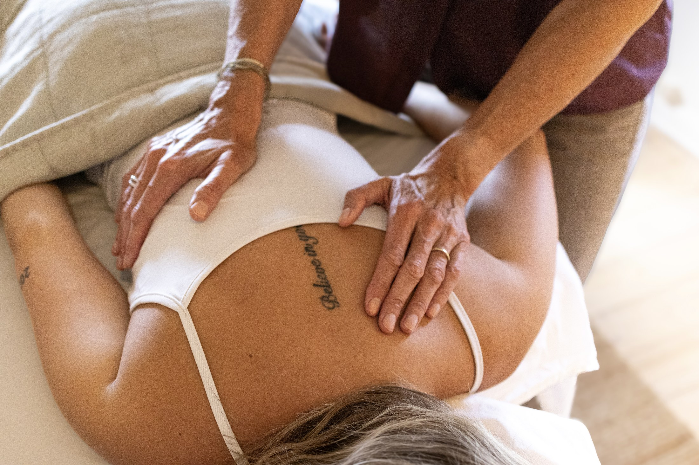
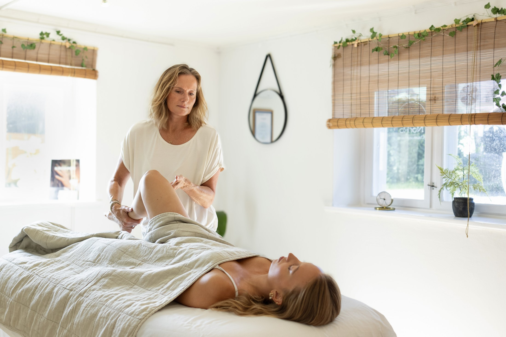
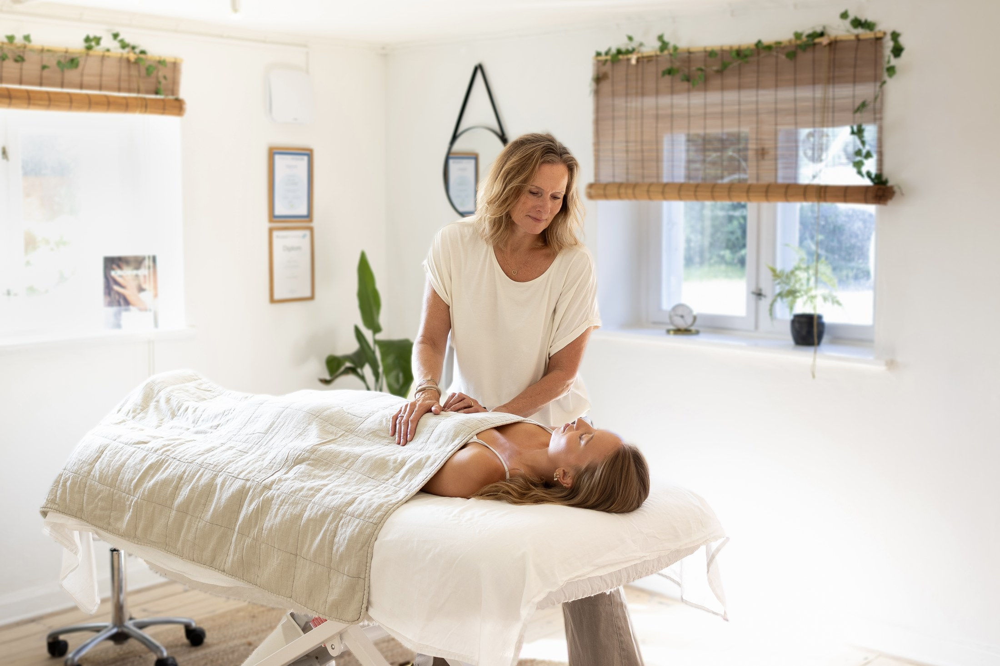
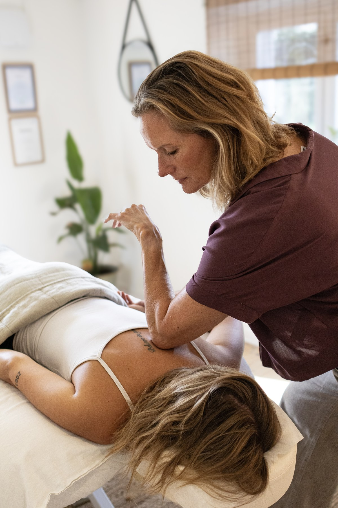
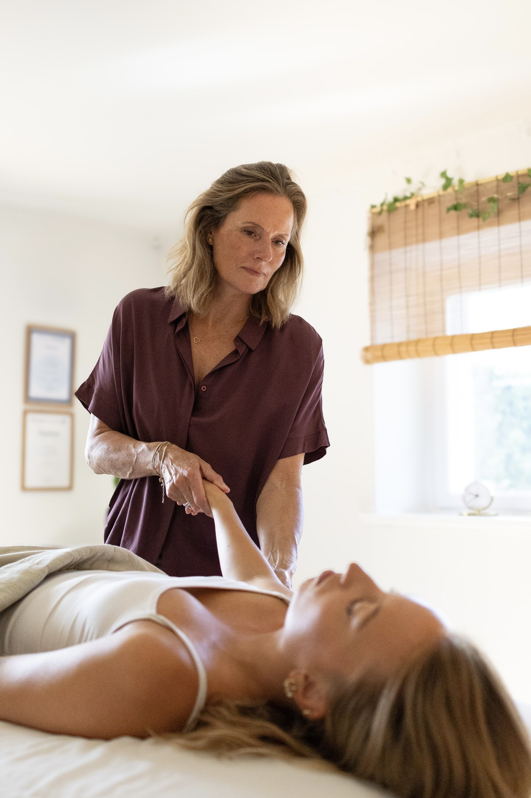
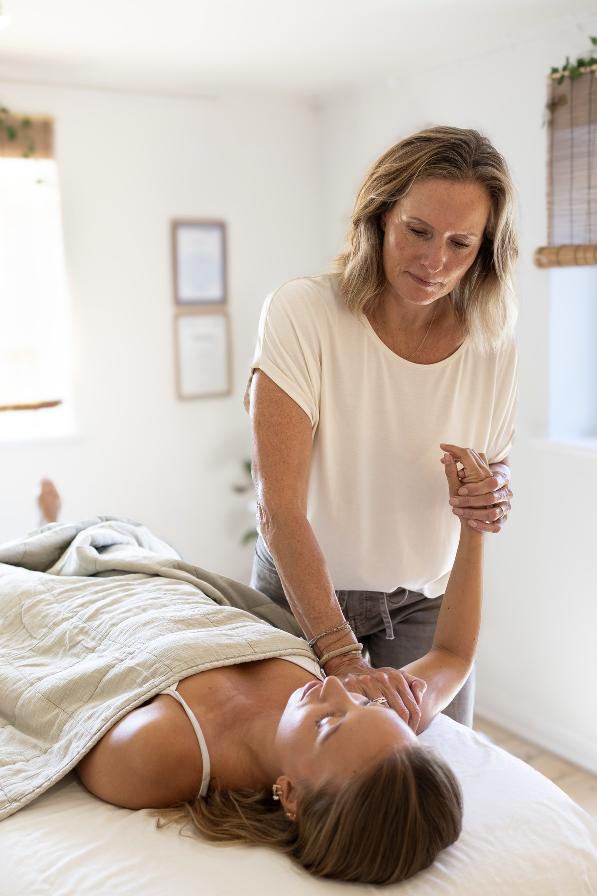
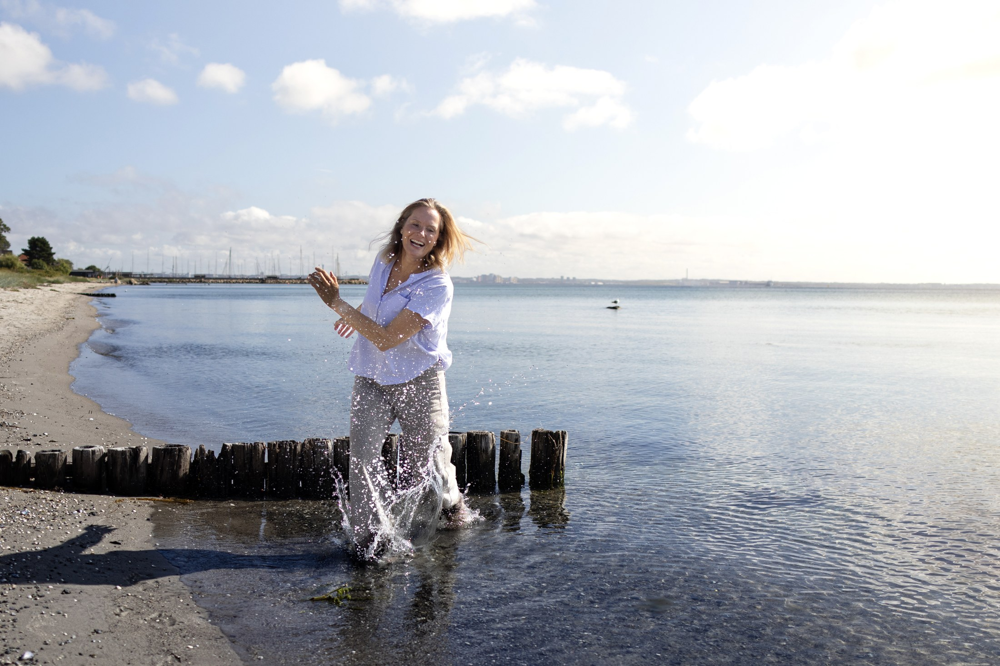
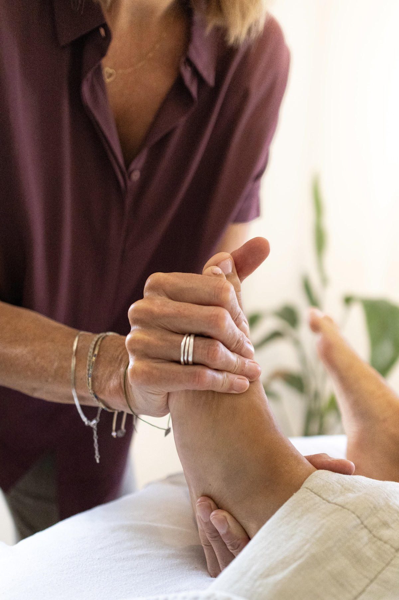